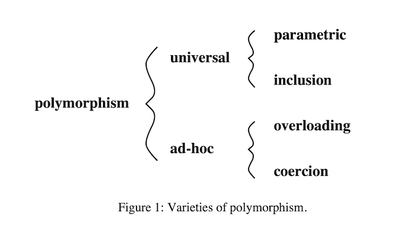
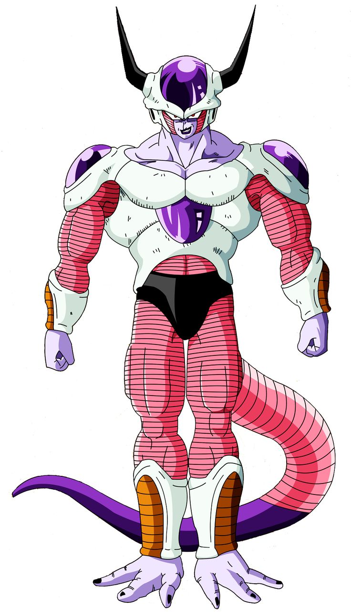

pandoc -s --highlight-style zenburn -i -t dzslides -o ./v2/cours/out/6-polymorphism.html ./v2/cours/src/6-polymorphism.mdComment peut-on qualifier le système de type de Scala ? (statique/dynamique/fort/faible)
Quels sont les avantages des types ?
Sur la JVM (en Java/Scala), peut-on définir nos propres types ?
Cas facile à typer: opération accepte un seul type de valeur.
Cas problèmatique (addition):
Un langage est dit être polymorphique si les valeurs / variables peuvent avoir plus d’un type. Une fonction polymorphique est une fonction dont les opérandes peuvent avoir plus d’un seul type. Au contraire, dans un langage monomorphique les valeurs / variables n’ont qu’un seul type.
Classification des types de polymorphisme:

generics en Java:class Person(val name: String, val age: Int)
class Employee(name: String, age: Int, val isManager: Boolean)
extends Person(name, age)
val e: Employee = new Employee("John Doe", 34, true)
val p: Person = e
e.isManager == true && e.name == p.name // => trueimplemented in most language with subtyping and inheritance
Class ≈ record with functions and local variables (attributes) and automatic attributes passing
subtyping on records ≈ poor man inheritance (Subclassing in OOP)
On parle de Nominal types pour l’inclusion en Scala/Java.
Avec un exemple illustratif:
// Scala: Nominal equivalence
class A(field1: String, field2: Int)
class B(field1: String, field2: Int)
new A("Hello", 1) == new B("Hello", 1) // => falseScala use nominal equivalence
2 equals types = they have the same structure and same name (nominal types)
Typescript use structural equivalence
2 equals types = they have the same structure (structural types)
On parle de Structural types pour l’inclusion en Typescript/Ocaml/F#/Reason:
// Typescript: Structural equivalence
type A = { field1: String, field2: number }
type B = { field1: String, field2: number }
const a: A = { field: 'Hello', field2: 1 }
const b: B = { field: 'Hello', field2: 1 }
a === b // => trueScala use nominal equivalence
2 equals types = they have the same structure and same name (nominal types)
Typescript use structural equivalence
2 equals types = they have the same structure (structural types)
Typage nominal & sous-typage:
// Scala
class A(f1: String, f2: Boolean)
class B(f1: String, f2: Boolean, f3: Int) extends A(f1, f2)
class C(f1: String, f2: Boolean, f3: Int)
val b: B = new B(f1 = "Hello", f2 = true, f3 = 1)
val a: A = b
val c: C = new C(f1 = "Hello", f2 = true, f3 = 1)
val a: A = c // !!!! ne compile pas, le sous-typage est expliciteTypage structurel & sous-typage:
Sur un exemple:
// TS
type A = { f1: string, f2: boolean }
const a: A = { f1: 'Hello', f2: true }
const b: boolean = !a // coercition automatique au runtime
const c: string = a.toString() // coercition manuelleEn Java/Scala, possible avec des casts (manuel et au runtime).
coercion is a semantic conversion
statically (automatic or manual) or dynamically (runtime tests)
Un rappel de l’overloading:
Overloading dans un langage OO:
class Printer(state: String) {
def printState(otherText: String): String =
s"state: $state, otherText: $otherText"
def printState(count: Int): String =
s"state: $state, count: $count"
}
val printer = new Printer("Hello")
printer.printState("World")
printer.printState(1)same name for different functions (different behaviours)
The context is used to decide which behaviour to use
could be done at compile-time or runtime
Overloading is a syntactic abbreviation

Question: Comment implémenter l’égalité de type (ex equals en Java) sans OO ?
Réponse d’un langage sans OO (ex: Haskell): Typeclass
Alternative aux approaches overloading/coercition des languages OO
Comment implémenterait-on une Typeclass en Scala ?
Implementation en Scala:
Assez proche du design pattern strategie:
trait Eq avec la méthode eq représente le comportement d’égalité à implémenter
Le generic A représente le type pour lequel on veut définir du comportement
Implémentons les instances de la typeclass Eq pour les types String, Ìnt et (A, B) (pour tout A et B).
Par contre comment passer le comportement voulu automatiquement (IoC) ?
scala définit le mot-clé implicit pour le passage implicit de paramètre
member prendrait un paramètre (implicite) de type Eq[A]
on impose une contrainte sur A pour lequel l’égalité doit être définie
A partir de l’implémentation de la fonction member ci-dessous, définissons la fonction diff qui permettra qui prend 2 listes en paramètres et retourne la liste des éléments de la 2ème liste qui ne sont pas contenus dans la 1ère.
Définition des instances:
implicit object EqInt extends Eq[Int] {
def eq(x: Int, y: Int): Boolean = ???
}
implicit def EqPair[A, B](implicit eqA: Eq[A], eqB: Eq[B]): Eq[(A, B)] =
new Eq[(A, B)] {
def eq(x: (A, B), y: (A, B)): Boolean = ???
}on définit les instances comme des valeurs implicites
le compilateur passe les instances automatiquement
pour une paire, on a une fonction EqPair
EqPair prend de manière implicite les instances pour les types A et B
Mettre à jour les implémentations des instances de la typeclass Eq pour les types String, Ìnt et (A, B) (pour tout A et B) définies précédemment:
Quel est le résultat des expressions suivantes (testez dans le Main.scala):
// member
member(List(1, 2, 3, 4, 5), 1)
member(List(1, 2, 3, 4, 5), 7)
member(List("a", "b", "c", "d", "e"), "a")
member(List("a", "b", "c", "d", "e"), "A")
// diff
diff(List(1, 2, 3, 4, 5), List(1, 2, 3, 4, 5))
diff(List("a", "b", "c", "d", "e"), List("a", "b", "c", "d", "e"))
diff(List(1, 2, 3, 4, 5), List(3, 4, 5, 6, 7))
diff(List("a", "b", "c", "d", "e"), List("c", "d", "e", "f", "g"))Ecrire une fonction qui va compter le nombre total de voyelles dans une String. Vous pouvez utiliser la fonction toList dispnible sur String.
Implémenter une instance de la typeclass Eq pour les types java.time.LocalDate`` etjava.time.LocalDateTime`.
Voir la javadoc pour LocalDate et la javadoc pour LocalDateTime.
Question: Est ce que je peux définir une typeclass pour ordonner les éléments d’un type (en sachant que j’ai besoin d’égalité pour définir un ordre) ?
Typeclass et sous-classage en Scala:
trait Order[A] extends Eq[A] {
def lt(x: A, y: A): Boolean
def ltEq(x: A, y: A): Boolean
}
implicit object OrdInt extends Order[Int] {
def lt(x: A, y: A): Boolean = ???
def ltEq(x: A, y: A): Boolean = ???
}
def search[A](x: A, list: List[A])(implicit ordA: Order[A]): Boolean =
list match {
case Nil => false
case head :: tail => (ordA.eq(x, head) || (ordA.lt(x, tail) && search(x, tail)))
}Relation de sous-classage entre Ord et Eq modélisée par héritage (de trait).
Nous souhaitons maintenant pouvoir effectuer la comparaison (inférieur à, supérieur à, …) entre deux valeurs d’un même type. Reprennons pour la typeclass Order définie précédemment.
trait Order[A] extends Eq[A] {
// lower than: x plus petit que y
def lt(x: A, y: A): Boolean
// lower or equal than: x plus petit ou égal à y
def ltEq(x: A, y: A): Boolean
// greater than: x plus grand que y
def gt(x: A, y: A): Boolean
// greater than or equal: x plus grand ou égal à y
def gtEq(x: A, y: A): Boolean
}Proposer une implémentation par défaut poour les méthodes gt et gtEq.
Compte-tenu de la fonction search définie comme suit:
def search[A](x: A, list: List[A])(implicit ordA: Order[A]): Boolean =
list match {
case Nil => false
case head :: tail => (ordA.eq(x, head) ||
(ordA.lt(x, tail) && search(x, tail)))
}Quelle est le résultat des expressions suivantes (testez dans le Main.scala) ?
Implémenter une instance de la typeclass Order pour les types java.time.LocalDate et java.time.LocalDateTime. Voir la javadoc pour LocalDate et pour LocalDateTime.
Implémenter la fonction isInRange qui permet de vérifier qu’une valeur prise en paramètre est comprise entre les deux valeurs de la paire prise en paramètre.
Et vérifier la valeur des expressions suivantes:
// val localDate = LocalDate.now()
// val localDateTime = LocalDateTime.now()
// isInRange(localDate, (localDate.minusDays(1), localDate.plusDays(1)))
// isInRange(localDate, (localDate.plusDays(1), localDate.plusDays(2)))
// isInRange(localDateTime, (localDateTime.minusDays(1), localDateTime.plusDays(1)))
// isInRange(localDateTime, (localDateTime.plusDays(1), localDateTime.plusDays(2)))Comment fonctionnent les implicits en Scala ?
Où le compilateur va-t-il les chercher ?
Que se passe-t-il si j’en ai plusieurs de défini ?
Comment fonctionnent les implicits en Scala ?
implicit au début de la liste de paramètres.Où le compilateur va-t-il les chercher ?
De manière simplifiée (pour les typeclass), on recherche à plusieurs endroits:
La variable str va être sélectionné par le compilateur et va être passé implicitement
Où le compilateur va-t-il les chercher ?
De manière simplifiée (pour les typeclass), on recherche à plusieurs endroits:
La variable str va être trouvée par le compilateur et va être passé implicitement
Où le compilateur va-t-il les chercher ?
De manière simplifiée (pour les typeclass), on recherche à plusieurs endroits:
Par ex, dans Typeclass.scala:
Où le compilateur va-t-il les chercher ?
De manière simplifiée (pour les typeclass), on recherche à plusieurs endroits:
Dans le fichier dans lequel on définit la fonction:
import xxx.Typeclass
object Test {
def f[A](a: Int)(implicit t: Typeclass[A]) = ???
f[String](a = 1)
}La variable str va être trouvée par le compilateur et va être passé implicitement
Où le compilateur va-t-il les chercher ?
De manière simplifiée (pour les typeclass), on recherche à plusieurs endroits:
Dans Typeclass.scala:
Où le compilateur va-t-il les chercher ?
De manière simplifiée (pour les typeclass), on recherche à plusieurs endroits:
Dans le fichier dans lequel on définit la fonction:
import xxx.Typeclass
object Test {
def f[A](a: Int)(implicit t: Typeclass[A]) = ???
f[String](a = 1)
}La variable str va être trouvée par le compilateur et va être passée implicitement.
Que se passe-t-il si j’en ai plusieurs de défini ?
def f[A](a: Int)(implicit t: Typeclass[A]) = ???
implicit val str1: Typeclass[String] = ???
implicit val str2: Typeclass[String] = ???
f[String](a = 1) // Erreur du compilateurDans ce cas, le compilateur ne sait pas laquelle méthode choisir, il lance une erreur de compilation.
Et si on utilisait les typeclass pour la coercition ?
// Scala
trait Coerce[A, B] {
def coerce: A => B
}
implicit object IntToStringCoerce extends Coerce[Int, String] {
def coerce: Int => String = convertIntToString
}Et si on utilisait pas les typeclass pour la coercition ?
On peut imaginer des conversions implicites:
String dans a123 en StringDes questions ?